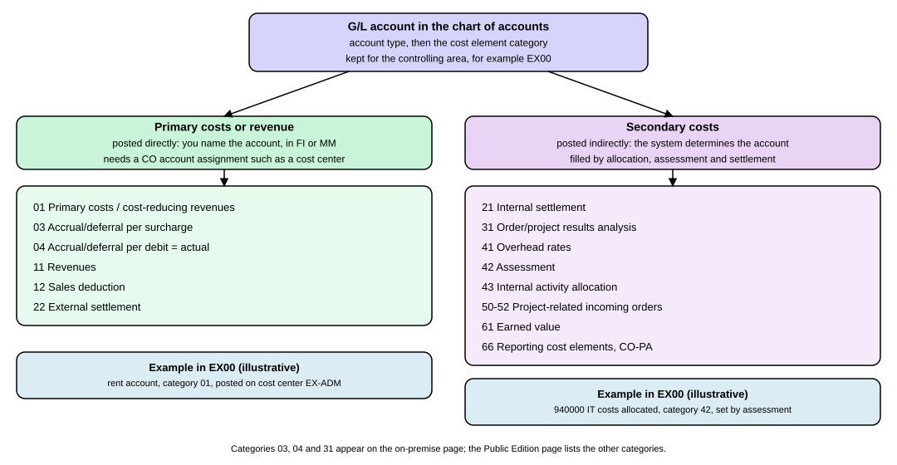

Controlling Overview and Cost Elements
|
This content was generated with the assistance of AI and should be verified against the official documentation before being relied on in production. |
Financial Accounting answers the question "what does the company own and owe, and what did it earn?". Controlling answers a different question: "where in the company did the costs arise, and for what purpose?". It lets a manager see that the office rent belongs to administration, compare what was planned with what was spent, and charge one department for the services of another. This page explains what Controlling covers, why it needs no reconciliation with Financial Accounting in SAP S/4HANA, what a controlling area is, which currencies Controlling uses, and what a cost element is and how its category decides what you can do with it. It is written against SAP S/4HANA 2025 FPS02 (on premise and Private Edition) and SAP S/4HANA Cloud Public Edition 2608. The ideas are the same in both editions; the page says where the tools or the lists differ.
Before you read
-
Finance Overview: where Financial Accounting and Controlling sit in SAP S/4HANA.
-
Organizational Units of Accounting: the company code, the controlling area and the cost center.
-
Charts of Accounts and G/L Accounts: the chart of accounts, the G/L account types and the three areas of an account.
-
The Universal Journal: the single table of line items that both Financial Accounting and Controlling read.
-
Ledgers, Currencies and Exchange Rates: the currency types that the controlling area currency is one of.
Key terms
-
Controlling: the part of the system for management accounting, which shows where costs arose and why.
-
Controlling area: the organizational unit within which a complete cost accounting can be done in a closed system.
-
Cost element: a G/L account that classifies the valued consumption of production factors in a controlling area.
-
Cost element category: the setting on a cost element that decides which business transactions may use it.
-
Cost element group: a hierarchy of cost elements used to build report rows and to process several cost elements in one step.
-
Controlling area currency: the currency in which cost accounting is done and the default currency of Controlling objects.
-
Object currency: the currency kept in the master data of one Controlling object, such as a cost center.
-
Account assignment object: the Controlling object that a cost posting is charged to, such as a cost center or an order.
What Controlling covers
SAP’s help describes Controlling as the component that gives information for management decisions: where costs arose in the organization and for what purpose. It provides the basis for matching the cost of sales with the revenue earned. Besides documenting actual costs, its main task is planning, so that actual data can be compared with plan data and variances found. Analysis of profitability, for example by contribution margin, monitors how cost-efficient the parts of the organization are.
The help lists the sub-components in the table below. Each is taught on its own page of this section; this page covers the foundation they all share, the controlling area and the cost elements.
| Sub-component | Component | What it does, in SAP’s words |
|---|---|---|
Cost Element Accounting |
CO-OM-CEL |
Gives an overview of the costs and revenues that occur in the organization. |
Cost Center Accounting |
CO-OM-CCA |
Monitors the costs arising within the organization; useful for assigning overhead costs to the place where they occurred. |
Internal Orders |
CO-OM-OPA |
Collect costs by the job that caused them; budgets can be assigned to keep costs within limits. |
Product Cost Controlling |
CO-PC |
Calculates the costs of making a product or providing a service, for example to find the minimum profitable price. |
Profitability Analysis |
CO-PA |
Analyzes profit and loss by market segment, with the corresponding costs allocated to the revenues of each segment. |
Profit Center Accounting |
EC-PCA |
Evaluates profit and loss of independent areas that are responsible for their costs and revenues. SAP describes it as a statistical accounting component. |
The names and component codes are those of the on-premise help for SAP S/4HANA 2025 FPS02. Other pages of this section treat the cost center, the internal order, the profit center, planning, allocations and product costing in turn.
Controlling and Finance are one posting
In SAP ERP, Controlling and Financial Accounting kept separate documents and had to be reconciled. SAP’s help for SAP S/4HANA says the two are integrated and need no reconciliation to stay consistent, because the financial data in CO and FI is based on the same line items. Each journal entry holds the G/L accounts to be debited and credited and also the Controlling account assignment objects: a cost center for wages and salaries, a project or order for material costs, or a combination of characteristics such as product, customer and region for sales revenues. The Universal Journal FAQ states the consequence: accounting documents and CO documents are superseded by journal entries, and the journal entry is the single source of truth for both views.
account 'rent', cost center EX-ADM"] --> B["One journal entry line
account + cost center + amounts"] B --> C["Financial Accounting view
balance of the G/L account"] B --> D["Controlling view
costs on cost center EX-ADM in EX00"]
Two details from SAP’s help matter for a beginner. First, Controlling normally shows the leading valuation, because recording values by different accounting principles is not a classic requirement of Controlling. The values of allocations inside Controlling, which move costs between segments and functional areas, are transferred to Financial Accounting, and with parallel ledgers they can be posted to a ledger other than the leading one. Second, what flows from Financial Accounting to Controlling depends on the design: with parallel ledgers, all values of the leading ledger that are relevant to CO are transferred, and postings that only ever update parallel ledgers are not available in Controlling. See Universal Parallel Accounting for the ledger side.
The controlling area
SAP defines the controlling area as an organizational unit within an enterprise for which a complete cost accounting can be performed within a closed system. It can contain one or several company codes, which may operate in different currencies, but all of them must use the same operating chart of accounts. All internal allocations refer only to objects of the same controlling area, so a cost of one controlling area can never be allocated to a cost center of another. When you create master data, the system always assigns the Controlling object to a controlling area and a company code.
For Example Trading Co. the controlling area is EX00 and it contains the company code EX01 (EUR, group currency GBP,
ledgers 0L and 2L, as in Organizational Units of Accounting).
One company code or several
SAP names two basic relationships between controlling areas and company codes.
| Relationship | Meaning | When SAP recommends it |
|---|---|---|
1:1, one company code per controlling area |
The financial accounting and the cost accounting views of the organization are identical. |
Consolidated analysis of settled transactions across company codes in Profitability Analysis (several controlling areas are then assigned to one operating concern), and intercompany processes where the production plant is the same as the delivering plant. |
1:n, several company codes per controlling area |
Cost accounting is done across the company codes in one controlling area, so internal allocations between company codes are possible. The external and internal views differ. |
Cross-company-code transactions that must be handled in one controlling area, group costing, Profit Center Accounting with transfer prices, and multilevel product cost management across company codes. |
EX00 with its single company code EX01 is the 1:1 case today. If Example Trading Co. later adds a second company code
in the same group, the 1:n relationship would let the two share cost centers and allocate costs between them. The help
warns that changing the relationship after the assignment can be difficult or very time-consuming, that allocations
across controlling areas are not possible, and that a 1:n relationship comes with conditions:
-
a consistent chart of accounts, and all cost elements treated the same way in all company codes (for example as primary cost elements or as accrual cost elements),
-
fiscal year variants of the company codes that match the one of the controlling area (see Fiscal Year and Posting Periods),
-
period-end closing in Controlling for all company codes together, and only after the closing in Financial Accounting is complete, and
-
authorizations that stop postings across company codes if that is not wanted.
Using only one controlling area also means using only one operating concern, and profit center allocations and transfer prices can be shown in only one controlling area.
Currencies in Controlling
Controlling uses three currencies, and a posting can pass through all of them.
| Currency | Meaning |
|---|---|
Transaction currency |
The currency in which a Controlling document is posted. It can differ from the other two. Amounts are converted automatically to the controlling area currency at the specified exchange rate. |
Controlling area currency |
The currency of cost accounting and the default currency of Controlling objects. It is set when the controlling area is created. |
Object currency |
The currency in the master data of one Controlling object such as a cost center or internal order. There is an object currency for the sender and one for the receiver. |
SAP’s help gives this example: if the transaction currency is USD, the controlling area currency is EUR and the object currency is SFR, the amount is converted twice, from USD to EUR and then from EUR to SFR. Actual data is translated with the average rate (exchange rate type M), and the version of a plan can name another exchange rate type for planning data.
A worked conversion for EX00
Example Trading Co. receives a freight bill of 1,200.00 USD and posts it on the cost center EX-ADM. EX00 uses the
company code currency EUR as its controlling area currency, so the amount is converted from the transaction currency to
EUR. With an illustrative average rate of 0.92 EUR for 1 USD (a made-up value, not a market rate):
The cost center EX-ADM is then charged 1,104.00 EUR in the controlling area currency. The object currency of
EX-ADM is EUR as well, because EX00 has no different company code currency, so no second conversion is needed. The
group currency GBP of EX01 is kept in the same journal entry line as a parallel currency by the translation rules of
the ledgers; see Ledgers, Currencies and Exchange Rates.
How the controlling area currency is chosen
The controlling area currency depends on two settings of the controlling area: how it is assigned to company codes and the currency type. SAP’s help lists the combinations.
| Assignment of company codes | Currency type | Controlling area currency |
|---|---|---|
Controlling area same as company code |
10 |
Use company code currency |
Cross-company-code cost accounting |
10 |
Use company code currency |
Cross-company-code cost accounting |
20 |
Independent controlling area currency |
Cross-company-code cost accounting |
30 |
Transfer group currency |
Cross-company-code cost accounting |
40 |
Transfer hard currency |
Cross-company-code cost accounting |
50 |
Index-based currency transfer |
Cross-company-code cost accounting |
60 |
Transfer global company currency |
The keys 10 to 60 in this table are those of the controlling area setting. They are not the currency type keys of
the ledgers (there 10 is the company code currency, 20 the controlling area currency and 30 the group currency), so do
not mix the two lists. For EX00 the illustrative choice is type 10, which gives EUR. A choice of type 30 would give
GBP, but only if every assigned company code carries the group currency as a parallel currency and the group currency is
stored in the client. In that case the company code currency EUR would become the object currency of the cost centers,
because SAP’s help says the company code currency is recorded automatically as the object currency whenever the
controlling area currency differs from it. SAP’s examples also show the effect in a mixed group: with group currency EUR
as the controlling area currency, objects of a Mexican subsidiary stay in MXP and objects of a US subsidiary in USD.
Two rules from the same help pages prevent surprises. With several company codes in one controlling area under currency type 10, all of them must use the same currency. And once an assigned company code is productive, the currency type can no longer be changed; you can only set the assignment control and the currency type when you redefine the controlling area or have not yet assigned a productive company code.
The Universal Journal can hold up to 10 currency fields. Two are preconfigured, the company code currency and the controlling area currency, and neither can be changed. The controlling area currency is only available if you use Controlling. The other eight are freely definable.
Cost elements are G/L accounts
A cost element classifies a cost or a revenue for Controlling, for example "labor costs". SAP’s help defines G/L accounts used this way as classifying the valued consumption of production factors of a company within a controlling area, giving information about value flow and value consumption. In SAP ERP every cost element was a master record of its own next to the G/L account. In SAP S/4HANA the Universal Journal has one Account field that covers G/L accounts and cost elements, cost elements are part of the chart of accounts, and you no longer maintain cost element master data separately. The Universal Journal FAQ puts it as: a cost element is a special type of G/L account, maintained as a master record in the general ledger.
What this means in practice:
-
Where you edit them. On premise, SAP names transaction
FS00(Edit G/L Account Centrally) and the Manage Chart of Accounts app (F0763A). The Manage G/L Account Master Data app (F0731A) listsKA01,KA02,KA03andKA06among its related back-end transactions, next toFS00,FSP0andFSS0. In the Public Edition, SAP says you edit cost element master data in the Manage G/L Account Master Data app. -
What the account type is. An account of type primary costs or revenue is a primary cost element, one of type secondary costs a secondary cost element (see Charts of Accounts and G/L Accounts).
-
Which data is only for Controlling. The cost element category, whether quantities are recorded and the internal unit of measurement belong to the controlling-area part of the account. They are kept per controlling area, so the same account can have a different category in another controlling area. In the Public Edition SAP adds that changing a cost element attribute for one company code affects all company codes of the controlling area.
-
Default account assignments. A default Controlling account assignment for a cost element is defined with transaction
OKB9rather than in a cost element master record. -
What stays visible. Customizing settings such as costing sheets, cost component structures and allocations continue to display cost elements, and cost element groups still exist.
A caution on KA01: SAP says cost element master data is no longer a separate object, yet transaction names
with the prefix KA still appear on SAP pages. SAP’s help for the Manage G/L Account Master Data app lists them as
related transactions of the app. One on-premise help page, Configuration of Units of Measure, Reconciliation, and
Controlling, also tells you to specify all revenue accounts as cost elements with KA01 and KA02 if you have integrated
Profitability Analysis (margin analysis). This page found no help text that explains how those transactions behave in
detail on SAP S/4HANA 2025 FPS02, so it does not describe it. Treat the G/L account master data as the place where a
cost element lives, and check what your system offers (requires an SAP system; not run here).
Sources: Cost Elements (SAP Help Portal, on premise), Cost Element Accounting (CO-OM-CEL) (SAP Help Portal, on premise), G/L Account Master Data in the Controlling Area (SAP Help Portal, on premise), Manage G/L Account Master Data (SAP Help Portal, on premise), Configuration of Units of Measure, Reconciliation, and Controlling (SAP Help Portal, on premise), Cost Elements (SAP Help Portal, Public Edition)
Cost element categories
The cost element category is a field in the G/L account master record that only Controlling uses. It classifies the account and so decides with which transactions the cost element can be used, for example internal settlement or allocation. It also decides how the account is posted:
-
Direct posting: you post an amount to the account by naming it. This is possible for all primary cost elements.
-
Indirect posting: the account is determined automatically at the time of posting. This is possible only for secondary cost elements.
On premise you see the category on the Control Data tab of the G/L account master record; in the Public Edition the same data is on the Controlling Data tab of the Manage G/L Account Master Data app.

Categories of primary cost elements
| Category | Use, as SAP describes it |
|---|---|
01 Primary costs / cost-reducing revenues |
Primary costs and revenues that reduce costs. Can be debited for all primary postings, for example in Financial Accounting or Materials Management. Rent received for subletting part of a rented office reduces the rent expense, so it is posted with category 01 and not with 11, because it is not revenue from sales. |
03 Accrual/deferral per surcharge |
Only for the percentage method of accrual calculation in Cost Center Accounting. You can post directly in Financial Accounting to record actual costs, and Cost Center Accounting uses it to post accrued costs. |
04 Accrual/deferral per debit = actual |
Only for the target equals actual method of accrual calculation in Cost Center Accounting. Otherwise like category 03. |
11 Revenues |
In Controlling, revenues are shown with a negative sign, except in Profitability Analysis, where they have a positive sign. Revenues posted to cost centers are only statistical: you can repost them to other cost centers for adjustment, but other allocations are not possible, and they are ignored in the iterative activity price calculation. |
12 Sales deduction |
Revenue adjustments such as discounts and rebates. The account assignment options are the same as for category 11, and sales deductions on cost centers are only statistical. Items such as freight charged separately on the invoice are not sales deductions; they are defined as revenue elements. |
22 External settlement |
Used when costs of orders, projects or cost objects are settled to objects outside Controlling, such as assets, materials or G/L accounts. A journal entry is created automatically. It cannot be used for settlement to cost centers, orders or projects inside Controlling; category 21 is for that, and no journal entries arise for such settlements. |
Categories of secondary cost elements
| Category | Use, as SAP describes it |
|---|---|
21 Internal settlement |
Settling order and project cost objects inside Controlling: orders, profitability segments, cost centers and projects. |
31 Order/project results analysis |
Saves results analysis data on the order or project. |
41 Overhead rates |
Allocating overhead from cost centers to orders by overhead rates. |
42 Assessment |
Allocating costs by the assessment method. |
43 Internal activity allocation |
Internal activity allocations and activity-based costing. |
50 / 51 / 52 Project-related incoming orders |
Sales revenue (50), other revenues such as imputed interest (51) and costs (52) from sales orders with incoming orders in the current period of the project-related incoming order. |
61 Earned value |
Earned value analysis in the project system. |
66 Reporting cost elements CO-PA |
Only for reports in combined Profitability Analysis. They can be used in cost element hierarchies but not posted to. |
The on-premise page lists all the categories above. The Public Edition page lists 01, 11, 12 and 22 for primary cost elements and 21, 41, 42, 43, 50, 51, 52, 61 and 66 for secondary ones, without 03, 04 and 31. Whether those three exist in the Public Edition is not stated by that page, so use the list in your own release.
Account assignment of Controlling objects
A posting to a cost element needs a Controlling object to be charged. SAP’s help calls these account assignment objects and distinguishes two kinds.
-
True Controlling objects can be sender or receiver of costs. The list includes cost centers (for costs), true orders, true projects, networks, make-to-order sales orders, cost objects, profitability segments, real estate objects and business processes.
-
Statistical Controlling objects are for information only; you cannot allocate costs from them to other objects. They include cost centers (for revenues, and when a true object already exists), statistical internal orders, statistical projects and profit centers. An internal order or project is made statistical in its master record.
The rules, in plain words:
-
Every posting item needs one true Controlling object.
-
Besides the true object you can name up to three statistical objects.
-
You cannot name two objects of the same type, such as a true order and a true project, in one item. The exception is a cost center together with one other true object: the posting is then true for the other object and statistical for the cost center.
-
The same object cannot be both true and statistical in one item.
-
Profit centers can only be posted to in addition to a true object, and the profit center you enter must match the one derived from that object.
-
A P&L account must be created as a cost element before you can post to it together with a Controlling object.
-
Revenue is posted truly to profitability segments, make-to-order sales orders, projects or orders with revenues and real estate objects, and only statistically to cost centers and profit centers.
SAP’s two examples show the logic. Costs of 100 USD on statistical order 40010 that also stores cost center 2330: the cost center is the true object, and the system also posts statistically to the order and to the profit center of the cost center. Costs of 100 USD on true order 40020 and cost center 2330: the order gets true costs, the cost center statistical costs, and the profit center statistical costs again.
Cost element groups
A cost element group is a hierarchy of cost elements with similar characteristics. It serves two purposes in SAP’s help: it defines the row structure of reports, with a total calculated at each node, and it lets you process several cost elements in one transaction, for example in cost center planning, distribution or allocation. SAP’s examples are a group Personnel Costs, used to plan personnel costs in one business transaction, and a group Services and Operating Supplies, used to assess operating supply costs in one step. A group does not represent cost elements by itself; it only structures them.
| Edition | Tool |
|---|---|
On premise |
The SAP Menu path Accounting, Controlling, Cost Element Accounting (or Cost Center Accounting), Master Data, Cost Element Group; and the Manage Cost Element Groups app. |
Public Edition |
The Manage Cost Element Groups app, which displays groups by chart of accounts, can limit the display to top nodes, end nodes or all nodes, and copies existing groups. |
A worked example for EX00
Example Trading Co. pays office rent of 1,000.00 EUR in company code EX01. The rent account is a primary cost element
(category 01) in EX00; its number is not important here. The posting names the cost center EX-ADM, so the line
item carries both. This is a primary posting: Financial Accounting entered the account directly.
Later the administration cost center passes part of its costs on. Suppose the company assesses 400.00 EUR of the rent to a
second cost center, EX-SALES (an illustrative cost center), using the secondary cost element 940000 of category 42.
Assessment is an allocation, so the system determines the secondary account; nobody posts to it by hand. The cost center
EX-ADM is credited and EX-SALES debited. The result for the controlling area:
| Step | Cost center EX-ADM |
Cost center EX-SALES |
Total in EX00 |
|---|---|---|---|
1 Rent posted (primary, category 01) |
+1,000.00 EUR |
0.00 EUR |
+1,000.00 EUR |
2 Assessment (secondary, category 42) |
-400.00 EUR |
+400.00 EUR |
0.00 EUR |
Balance after both steps |
600.00 EUR |
400.00 EUR |
1,000.00 EUR |
An allocation moves costs between objects but does not change the total of the controlling area, so the sum over all cost centers stays at the amount of the original primary posting:
The secondary cost element is what keeps the allocation visible in reports: the 1,000.00 EUR stays one primary cost, and the 400.00 EUR transfer shows as an assessment on its own line.
Configuration pointers
The following steps change the setup of a system and need an SAP system; they were not run here.
-
Define the controlling area and assign company codes. On premise, in the Implementation Guide choose Controlling, General Controlling, Organization, Maintain Controlling Area, select the controlling area, choose Assignment of company code(s), then New Entries and enter the company codes. They must be fully maintained before. The assignment control indicator and the currency type are specified there. In the Public Edition this page found no help page that gives the equivalent configuration path, so it names none. The read-only data model view
I_ControllingArea(Public Edition help) exposes, among others, the fieldsCONTROLLINGAREA,CHARTOFACCOUNTS,FISCALYEARVARIANT,CONTROLLINGAREACURRENCYROLEandCONTROLLINGAREACURRENCY; the help does not state in the page used here whether the view is released for ABAP Cloud development. -
Assign business transactions to number ranges. When you activate a Controlling component, SAP says all business transactions of the component must have number ranges, defined for each controlling area, or the transactions cannot be called. Transaction
OKC1displays all CO business transactions, and plan and actual transactions belong in separate transaction groups. The sample client 000 contains defaults. -
Create or change cost elements. Edit the G/L account (see above) and fill the cost element category in the controlling-area data.
-
Default account assignments. Maintain them with transaction
OKB9on premise. The Public Edition Customizing activity named in SAP’s starter-content help is Manage Default Account Assignments, with the fields Company Code and Cost Element and the PrfSeg checkbox for a profitability segment.
Common errors and pitfalls
-
Posting to a cost element without a Controlling object. SAP states that postings to cost elements always need a CO object; every posting item needs a true Controlling object.
-
Posting to a P&L account that is not a cost element together with an object. Create the account as a cost element first.
-
Using category 22 for settlement inside Controlling. Category 22 is for settlement to assets, materials or G/L accounts and creates a journal entry; use 21 for settlement to cost centers, orders or projects.
-
Treating cost-reducing revenue as sales. Rent received that reduces your own rent expense uses category 01, not 11.
-
Expecting to allocate revenue on a cost center. Revenue on cost centers is only statistical; other allocations are not possible.
-
Mixing the two currency type lists. Keys 10 to 60 of the controlling area setting differ from the ledger currency type keys.
-
Planning to change the currency type later. Once an assigned company code is productive it cannot be changed.
-
Assuming the Public Edition lists the same categories. The two help pages differ; use the list of your release.
-
Skipping number ranges for a new Controlling component. The transactions cannot then be called.
Summary
-
Controlling shows where costs arose and why, and plans and compares them. In SAP S/4HANA it needs no reconciliation with Financial Accounting, because both read the same journal entry lines.
-
The controlling area is the closed unit of cost accounting. It holds one or several company codes that share the operating chart of accounts, and allocations never cross controlling areas.
-
Controlling uses the transaction currency, the controlling area currency and each object’s currency. The controlling area currency is chosen by an assignment control and a currency type, and cannot be changed once a company code is productive.
-
A cost element is a G/L account of type primary costs or revenue or secondary costs, with a cost element category kept per controlling area. The category decides the transactions it can be used with and whether it is posted directly or indirectly.
-
A posting needs one true Controlling object and may add statistical ones. Allocations move cost between objects without changing the total of the controlling area.
-
Cost element groups structure cost elements for reports and for processing several of them at once.
References
-
Assigning Controlling Areas and Company Codes (SAP Help Portal, on premise)
-
Specifying the Controlling Area Currency (SAP Help Portal, on premise)
-
Business Transactions in Controlling (SAP Help Portal, on premise)
-
Cost Element Accounting (CO-OM-CEL) (SAP Help Portal, on premise)
-
Account Assignment of Controlling Objects (SAP Help Portal, on premise)
-
Examples: Account Assignment Logic (SAP Help Portal, on premise)
-
Parallel Valuation Methods in Controlling (SAP Help Portal, on premise)
-
G/L Account Master Data in the Controlling Area (SAP Help Portal, on premise)
-
Manage G/L Account Master Data (SAP Help Portal, on premise)
-
Configuration of Units of Measure, Reconciliation, and Controlling (SAP Help Portal, on premise)
-
Controlling Area, I_ControllingArea (SAP Help Portal, Public Edition)
-
Maintain Cost Elements for G/L Accounts (SAP Help Portal, Public Edition)